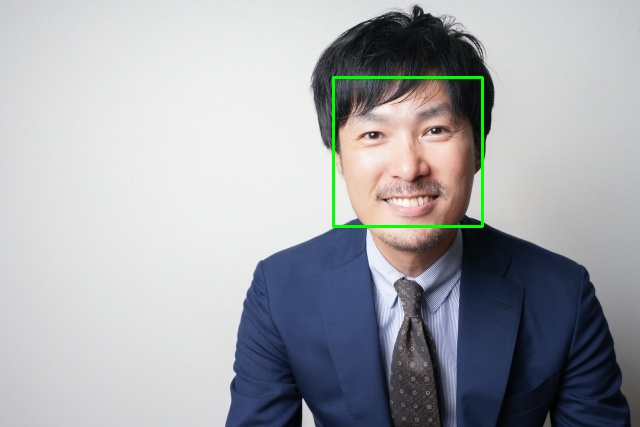

Vtuber みたいなことをできるようにしてみたい．
顔認識ができればいいのか？
単純なマッチング
まずは単純に動画内を移動するアイコンをマッチングできるようにする.
動くプレミアムボールに対してトラッキングし，判定した場所に長方形を描く
ソース
顔認識
openCV で顔認識ができるらしい．
既存の学習セットがあったのでこれを食べさせればできる．(下記は photoAC の素材で顔判定をしたもの)
ソース

カメラで顔認識
opencv でデバイスを開くようにすれば同じように検証できるらしい．
顔をトラッキングし続けて，顔を認識したらバックベアードのイラストを出すようにした
ソース